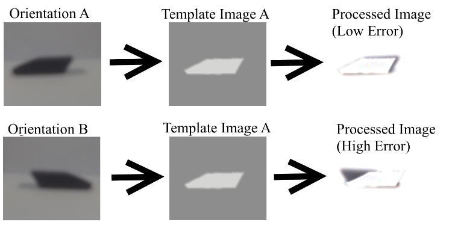

16-778, 18-578, 24-778 Spring 2015
Group G
Eric Newhall (enewhall)
Guillermo Cidre (gmcidre)
Christian Heaney-Secord (cheaneys)
Michael O'Connor (mkoconno)
Systems
- Part Separator Design
- Vision Processing Design
- Part Placer Design
- Tray Positioner Design
- Flux and Wire Dispensor Design
Vision Processing Design
The vision processing system determines the orientation of a part after it has left the
part separator system and relays this information to the part placer system so that the
part can be reoriented if necessary then placed. The first step in this process is to
command the conveyor belt to move until a part has arrived in front of the camera. Short
bursts of movement are sent to the conveyor belt until a part is detected. The conveyor
belt then remains completely stopped until the handling of this part is complete.
The camera then creates an image from the part (see figure 5: Orientation A). The image is
compared to a template image stored in memory. There are four different templates that
will be applied one at a time to determine which of the four orientations the part is in.
A processed image is created by the combination of the image from the camera and a
template image using color burn. The amount of black in the processed error represents the
error (see figure 5: Processed Image). Summing the RGB values of all the pixels in the
processed image will indicate the total amount of white and black pixels and thus give an
idea of the amount of error between the camera image and the template Image.
Once the error is calculated, a template is shifted slightly in four directions: dx, -dx,
dy, and -dy. Then the error is recomputed for each case. If the resultant processed image
has a smaller error the template is moved by that amount. The shifting continues until the
error can no longer be reduced. Once a minimum error is found the next template is
applied and the process is repeated until there is a minimum error for each of the four
templates. Whichever template has the lowest error indicates the orientation that the part
is in.
Due to the large amount of computation needed to complete the vision processing quickly a
Raspberry Pi microcomputer will be used solely for this system. The Raspberry Pi will
communicate with the Arduino via a serial connection. The Raspberry Pi has the added
benefit of easily communicating with the Playstation Eye camera that will be capturing the
images of the parts.

Vision Processing Implementation